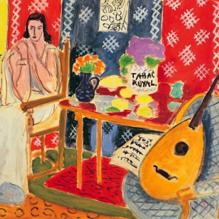

Home
Galeria
HIstória
Fauvismo
Contato
The Green Stripe - Retrato de Madame Matisse (1905)
A alegria de VIver (1905-1906)
Mesa de cesta com laranjas (1913)
A pequena odalisca com robe roxo (1937)
Nome desconhecido

O Tabac Real (1943)